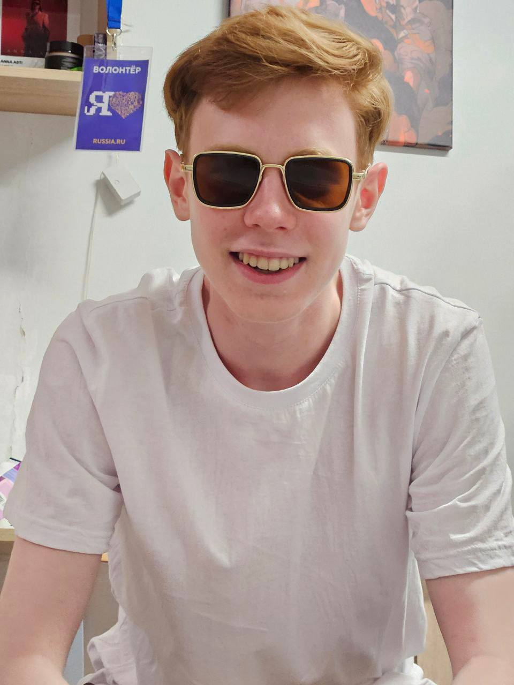

Созвездие: 0/16
Найди следующую звезду для продолжения созвездия
Благодаря тебе, все звезды на моем небе горят ярким пламенем.
Спасибо за то, что ты есть, я тебя очень сильно люблю.
С Днем Рождения, Касатик❤️
Тут есть что-то интересное, поищи)

Когда я смотрю в твои глаза, я как-будто смотрю в космос, в потрясающий и завораживающий
Твоя улыбка - это солнце, сияющее ярче любых звезд и делающее меня счастливым
Ты — самое красивое созвездие в моей галактике